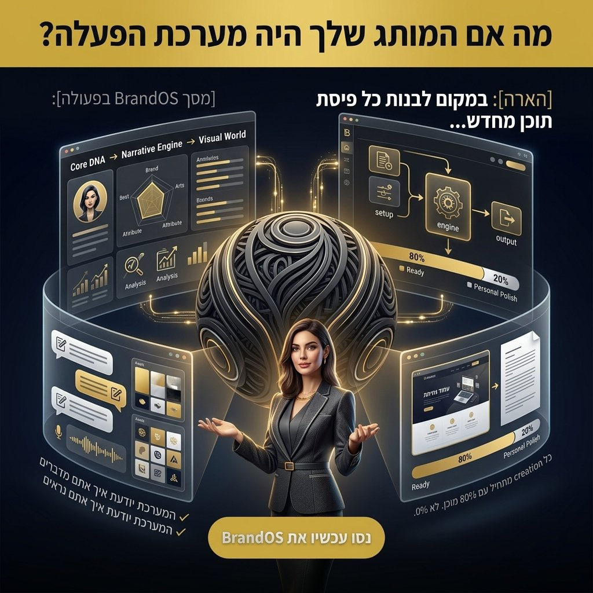

דמיינו מנהלת שיווק המתכוננת להשקת קמפיין חדש. הרעיון המרכזי ברור לה, אך מיד לאחר מכן מגיע מבול המשימות: חמישה פוסטים לרשתות חברתיות, שלושה מאמרי בלוג, סדרת מיילים, תסריט וידאו והודעה לעיתונות. כל פיסת תוכן צריכה לדבר באותה שפה, לעורר את אותה תחושה, ולהיראות עקבית — אך הצוות מוצא את עצמו מתחיל מדף לבן בכל פעם מחדש.
קיימים אמנם הנחיות מותג, אך הן מרגישות יותר כמו ספר עיון סטטי מאשר מנוע חי ונושם. התוצאה? מסרים לא עקביים, ויזואליה מפוצלת, ואינסוף תיקונים שמרוקנים משאבים ומדללים את עוצמת המותג. זה כמו לנסות לבנות גורד שחקים ללא תוכנית אב — רק עם ערימת לבנים ורעיון כללי.

מעבר ללוגו: ה-Core DNA כמסד נתונים חי
הבסיס לפתרון טמון בהבנה שמותג אינו רק חזות חיצונית, אלא מערכת הפעלה פנימית. כשם שבניין אינו רק צבע הקירות החיצוניים שלו, אלא היסודות, השלד הקונסטרוקטיבי, וזרימת החללים שבו — כך גם מותג.
ה-Core DNA הוא הלוגיקה הבלתי משתנה של המותג; הערכים, הייעוד, והפרספקטיבה הייחודית שמנחה כל החלטה. זהו הארכיטקטורה הנסתרת, המערכת העצבית המרכזית.
זוהי נקודת הפתיחה שלנו ב-Brand Worlds Studio: לחשוף את ה-DNA הזה ולבנות ממנו את כל השאר. ללא הבנה עמוקה של הליבה, כל ניסיון ליצור תוכן יהיה ניחוש — ולא ביטוי אותנטי.
מנוע הנרטיב: הפיכת ה-DNA לשפה עקבית
ה-Core DNA לבדו אינו מספיק; יש לתרגם אותו למנוע נרטיבי דינמי. מנוע זה מכתיב את הקול, הטון וקשתות הסיפור של המותג. הוא מספק מסגרת יצירתית, לא מגבילה.
קחו לדוגמה חברת טכנולוגיה שה-Core DNA שלה הוא "חדשנות ממוקדת אדם". מנוע הנרטיב שלה ייתן עדיפות לאמפתיה, חווית משתמש, ו-AI אתי — גם כשמדברים על אלגוריתמים מורכבים. השפה תהיה פשוטה, מחברת ומעצימה.
כאן, AI הופך לכלי רב עוצמה — לא כדי ליצור את הנרטיב, אלא כדי להרחיב את יישומו העקבי על פני אינספור נקודות מגע, ולוודא שכל משפט מהדהד את הליבה. זה כמו מערכת החשמל של בניין — נסתרת, אך מזינה כל מתג אור וכל מכשיר בעקביות.
העולם הויזואלי: הארכיטקטורה שהופכת לזיהוי מיידי
הויזואליה של המותג אינה קישוט; היא הביטוי המוחשי של העולם הפנימי שלו. מעבר ללוגו ולצבעים, מדובר באווירה, בקומפוזיציה, באור ובטקסטורה — בתחושה שהיא מעוררת.
חשבו על סגנון אדריכלי איקוני, כמו הברוטליזם. הוא לא רק בטון; הוא פילוסופיה המתורגמת לצורה, טקסטורה, והיחס לאור ולחלל. העולם הויזואלי של מותג צריך לפעול באופן דומה.
מותג יוקרה מינימליסטי, לדוגמה, לא רק משתמש ב"קווים נקיים", אלא מפעיל במדויק שטח שלילי, טיפוגרפיה מוקפדת, ופלטת צבעים ייחודית — כמו שחור עמוק (#0a0a0a), אפור פחם (#171717) ונגיעות של זהב חם (#d4af37) — כדי לתקשר בלעדיות ותחכום מבלי לומר מילה.
האצה יצירתית: יצירה מתחילה ב-80% מוכנה
השילוב של Core, Narrative ו-Visual World יוצר "מערכת הפעלה למותג" עוצמתית שמשנה את כל תהליך העבודה. במקום להתחיל כל פרויקט מדף לבן, היוצרים מתחילים עם 80% מהכוונה כבר מוגדרת — הם יודעים מה לומר, איך לומר, ואיך זה צריך להיראות. מה שנותר הוא ה-20% היצירתיים באמת: ההתאמה לפלטפורמה, הרעיון הייחודי של הקמפיין, הניואנס הספציפי.
חשבו על זה כמו שף שנכנס למטבח מאובזר. המרכיבים, התבלינים, הכלים ומתכוני הבסיס כבר שם. השף לא צריך לטחון קמח או לייצר חמאה — הוא יכול להתמקד ביצירתיות, בעונתיות, ובפריסה על הצלחת.
כך גם עם מותג בנוי היטב: הצוות לא מבזבז אנרגיה על שאלות בסיסיות כמו "מה הטון שלנו?" או "איזה צבעים לבחור?", אלא משקיע אותה ביצירה שמזיזה את המחט.
AI + Brand OS = הכפלת כוח
וכשמשלבים את מערכת ההפעלה הזו עם AI, הקסם מתעצם. AI שיודע לקרוא את ה-DNA של המותג לא מייצר תוכן גנרי — הוא מייצר תוכן שנשמע, נראה ומרגיש כמו המותג עצמו. לא עוד ניחושים. לא עוד סבבי תיקונים אינסופיים. רק יצירה מדויקת שנולדת ממקום של הבנה.
✕ בלי Brand OS
- כל פיסת תוכן מתחילה מדף לבן
- הנחיות מותג סטטיות שאף אחד לא קורא
- AI מייצר ממוצע של האינטרנט
- סבבי תיקונים אינסופיים
- זהות מותגית מתפרקת עם הזמן
✓ עם Brand OS
- כל יצירה מתחילה ב-80% מוכנה
- DNA חי שמוזן לכל כלי
- AI מייצר את ה"אתם הטובים ביותר"
- עריכה מינימלית ומהירה
- עקביות מוחלטת לאורך זמן
שלושת השכבות של Brand OS
Core DNA — הליבה
ערכים, מהות, אישיות וייעוד. הלוגיקה הבלתי משתנה שמנחה כל החלטה.
Narrative Engine — מנוע הנרטיב
קול, טון, קשתות סיפור ומסגרת יצירתית שמתרגמת את ה-DNA לשפה חיה.
Visual World — העולם הויזואלי
אווירה, צבעים, קומפוזיציה, טקסטורות וסגנון — הביטוי המוחשי של הזהות.
המותג שלך הוא לא רק מה שנראה מבחוץ. הוא הארכיטקטורה שמבפנים.